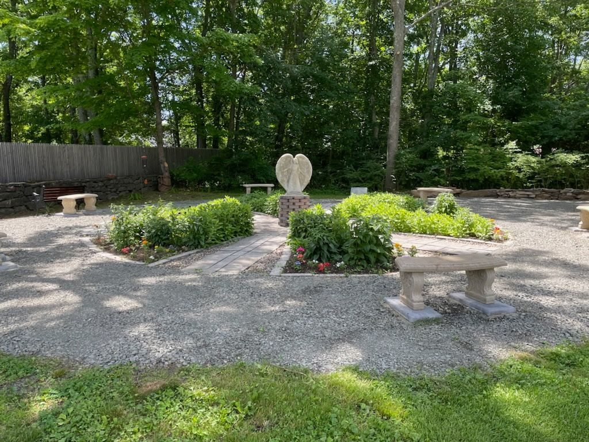

The Prayer & Meditation Garden
A quiet place on the church grounds for stillness, reflection, and prayer.

A space set apart
Tucked among the shade trees on our grounds, the garden offers benches, a central path, and a peaceful place to pause. You do not need to be a parish member or wait for a Sunday service to visit.
A garden built through service
The Prayer & Meditation Garden began as an Eagle Scout service project led by Brandon Price of Troop 230, a longtime member of All Saints'. The parish approved the project in 2020, but the arrival of COVID-19 put the work on hold.
Work resumed after Memorial Day 2021. With the help of Scout leaders and families, parishioners, Wolcott town officials and crew members, and neighbors, the garden was completed and formally dedicated and blessed on September 19, 2021.
Made possible together
The project was supported by Mayor Dunn, Jim Carey and the Town Crew, the parents and Scouts of Troop 230, members of All Saints', and a community dinner fundraiser hosted by La Fortuna Restaurant. Their generosity made this lasting place of prayer and reflection possible.
Finding the garden
Come to 282 Bound Line Road and drive to the end of the parking lot behind Wolcott Town Hall or All Saints'. Park there and follow the church grounds around to the garden. If you need help before visiting, call (203) 879-2800.